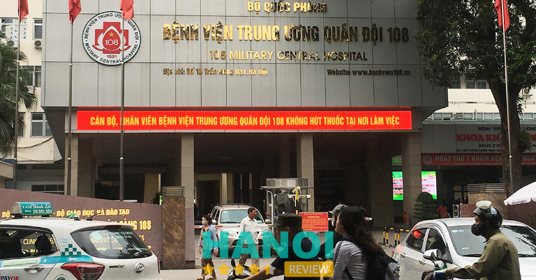
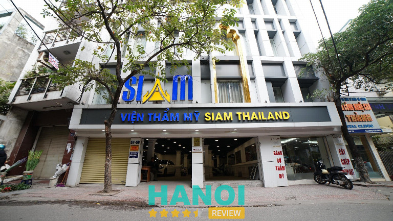
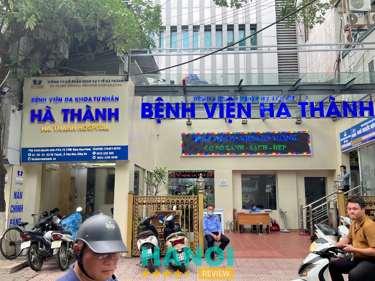
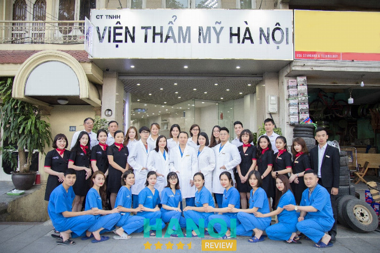

10 Địa chỉ nâng ngực tại Hà Nội đẹp, uy tín, an toàn nhất
Các địa chỉ nâng ngực tại Hà Nội đang là những địa chỉ được chị em quan tâm. Bởi nâng ngực là một trong những dịch vụ thẩm mỹ có độ khó cao, yêu cầu tay nghề bác sĩ cũng như máy móc hỗ trợ phải thực sự chất lượng.
Top 10 Địa chỉ nâng ngực ở Hà Nội an toàn nhất
Trong những năm gần đây, nhu cầu nâng ngực có xu hướng đáng kể. Không giống với vùng eo hay mông, kích thước vòng 1 rất khó cải thiện thông qua chế độ ăn uống và tập luyện vì phụ thuộc vào yếu tố di truyền. Do đó, nhiều chị em quyết định can thiệp phẫu thuật thẩm mỹ để sở hữu vòng 1 tràn đầy, săn chắc và quyến rũ.
Tuy nhiên, phẫu thuật nâng ngực tiềm ẩn nhiều biến chứng và rủi ro như tràn dịch, hoại tử, nhiễm trùng, ngực nâng không cân đối hoặc không tự nhiên. Vì vậy trước khi quyết định thực hiện thủ thuật này, chị em cần lựa chọn cơ sở thẩm mỹ uy tín để hạn chế tác dụng phụ và sở hữu được vòng 1 như mong muốn.
Để dễ dàng hơn trong việc lựa chọn địa chỉ nâng ngực đẹp và chất lượng tại Hà Nội, chị em có thể tham khảo một số cơ sở được HaNoiReview tổng hợp dưới đây:
Bệnh viện thẩm mỹ Kangnam
Giấy phép hoạt động: 194/BYT – GPHĐ
Với 2 chi nhánh tại 2 thành phố lớn là Hà Nội và TP.HCM. Bệnh viện thẩm mỹ Kangnam nổi bật với dịch vụ phẫu thuật thẩm mỹ như nâng ngực, hút mỡ bụng, nâng mông, cắt mí, nhấn mí… Sở hữu cơ sở hạ tầng khang trang, thiết bị máy móc hiện đại cùng đội ngũ bác sĩ với chuyên gia dày dặn kinh nghiệm. Cơ sở này tự tin đem đến cho khách hàng các dịch vụ thẩm mỹ an toàn và chất lượng cao.
Thấu hiểu được mong muốn sở hữu vòng 1 tròn đầy và săn chắc của chị em, bệnh viện thẩm mỹ Kangnam luôn cố gắng cập nhật và ứng dụng các công công nghệ nâng ngực mới nhằm đem đến cho chị em sự lựa chọn. Hiện nay, tại đây thực hiện các dịch vụ nâng ngực nội soi, nâng ngực chảy xệ và nâng ngực bằng mỡ tự thân.
Quy trình nâng ngực tại Bệnh viện thẩm mỹ Kangnam được đảm bảo vô trùng hoàn toàn. Và hơn thế nữa để dự phòng các biến chứng hậu phẫu, tại đây còn thực hiện khám tổng quát và xét nghiệm kỹ lưỡng nhằm đảm bảo khách hàng có đủ sức khỏe để thực hiện phẫu thuật. Bên cạnh đó, khách hàng nâng ngực tại cơ sở này sẽ được bảo hành theo gói dịch vụ và tái khám miễn phí.
Thông tin liên hệ:
- Địa chỉ: 190 Trường Chinh, P. Khương Thượng, Q. Đống Đa, Hà Nội
- Điện thoại: 1900 6466
- Website: benhvienthammykangnam.vn
- Email: tuvan@kangnam.com.vn
- Facebook: FB.com/Thammykangnam
Bệnh viện Hồng Ngọc
Giấy phép hoạt động: 002960/HNO – CCHN
Một bộ ngực đẹp sau khi được “tân trang” không chỉ nằm ở kích thước mà còn đòi hỏi nhiều yếu tố khác. Bao gồm khả năng linh hoạt khi di chuyển, độ mềm mại khi chạm, đây là hai yếu tố quan trọng, đảm bảo bác sĩ thực hiện phải có tay nghề cao. Tại Bệnh viện Hồng Ngọc, cơ sở tự hào tập hợp đội ngũ bác sĩ với kinh nghiệm lâu năm trong nghề, giúp “núi đôi” của bạn đẹp hoàn hảo sau khi nâng cấp.
Đây là địa chỉ phẫu thuật nâng ngực ở Hà Nội được nhiều chị em tin tưởng. Nếu đang có nhu cầu tăng kích thước vòng 1, bạn có thể liên hệ ngay đến cơ sở để được trực tiếp bác sĩ tư vấn miễn phí. Đến với Bệnh viện Hồng Ngọc, bạn sẽ được hưởng các chế độ chăm sóc chu đáo, tư vấn kỹ càng để có thể sở hữu được dáng ngực ưng ý, đẹp tự nhiên mà không lộ dấu vết.
Bệnh viện Hồng Ngọc luôn không ngừng học hỏi, nghiên cứu để có thể bắt kịp các kỹ thuật nâng ngực tiên tiến trên thị trường. Các bác sĩ tại đây là những chuyên gia giàu kinh nghiệm, từng bước thực hiện được tiến hành cẩn thận, kỹ thuật đặt túi được chú trọng tỉ mỉ, chính xác. Điều này nhằm giúp hạn chế tổn thương thấp nhất cho mạch máu, mô tuyến vú. Bên cạnh đó còn góp phần duy trì độ tự nhiên, mềm mại cho bộ ngực mới của bạn.
Thông tin liên hệ:
- Địa chỉ: 55 Yên Ninh, P. Trúc Bạch, Q. Ba Đình, TP. Hà Nội
- Điện thoại: 024 3927 5568
- Email: info@hongngochospital.vn
- Website: hongngochospital.vn
- Fanpage: FB.com/BenhvienHongNgoc
GỢI Ý: 11 Địa chỉ nâng mũi tại Hà Nội uy tín, an toàn, bác sĩ giỏi
Khoa phẫu thuật thẩm mỹ – Bệnh viện 108
Bệnh viện Trung Ương Quân Đội (Bệnh viện 108) là một trong những số ít cơ sở y tế của nhà nước có dịch vụ nâng ngực. Dịch vụ này được thực hiện tại Khoa phẫu thuật Hàm mặt và Tạo hình. Mặc dù bệnh viện không tập trung vào các dịch vụ phẫu thuật thẩm mỹ nhưng vẫn được nhiều khách hàng lựa chọn bởi giá thành hợp lý, bác sĩ có tay nghề cao và đảm bảo vô trùng nghiêm ngặt theo tiêu chuẩn của Bộ Y tế.

Bệnh viện 108 trang bị thiết bị, bộ dụng cụ y khoa chuyên dụng, hiện đại. Điều này giúp ca phẫu thuật được tiến hành an toàn, nhẹ nhàng, đường rạch nhỏ và không làm đau đớn, lộ dấu về đã phẫu thuật. Ngoài ra, bệnh viện cam kết sát khuẩn toàn bộ vùng ngực và dụng cụ kỹ lưỡng trước khi thực hiện, đảm bảo an toàn, không viêm nhiễm, biến chứng.
Hiện tại, Bệnh viện 108 có dịch vụ bơm mỡ tự thân và phẫu thuật nâng ngực nội soi qua đường quầng, đường nách và đường nếp gấp. Ngoài ra, bệnh viện cung cấp nhiều loại túi ngực với hình dáng và kích thước đa dạng.
Thông tin liên hệ:
- Địa chỉ: 1A Trần Hưng Đạo, P. Bạch Đằng, Q. Hai Bà Trưng, Hà Nội
- Điện thoại: 0967 751 616
- Email: bvtuqd108@benhvien108.vn
- Website: benhvien108.vn
Bệnh viện thẩm mỹ Thu Cúc
Giấy phép hoạt động: 183/BYT-GPHĐ
Không phải ai sinh ra cũng “may mắn” sở hữu vòng 1 hoàn hảo. Để khắc phục tình trạng ngực lép, không đều hoặc chảy xệ thì không ít chị em hiện nay tìm đến các địa chỉ phẫu thuật nâng ngực ở Hà Nội uy tín thực hiện.
Trước khi bắt đầu phẫu thuật, bạn sẽ được trực tiếp bác sĩ chuyên môn tư vấn, thăm khám tình trạng sức khỏe kỹ càng để có thể phát hiện kịp thời các bệnh lý tiềm ảnh như tim mạch, huyết áp, máu khó đông, tiểu đường, … đảm bảo cơ thể bạn đủ điều kiện thực hiện đại phẫu.
Cơ sở quy tụ đội ngũ bác sĩ, ê kíp có kinh nghiệm phong phú trong lĩnh vực nâng ngực. Trải qua hàng ngàn ca thực hiện, với các tình trạng ngực đa dạng và khác nhau của từng khách hàng. Từ đó đúc kết ra được nhiều kinh nghiệm, đảm bảo có đủ khả năng để tư vấn, giúp chị em chọn được túi ngục và size phù hợp, Không lộ dấu vết phẫu thuật, không bao xơ.
Cũng giống với các địa chỉ phẫu thuật nâng ngực uy tín khác ở Hà Nội, Bệnh viện thẩm mỹ Thu Cúc cam kết sau khi thực hiện, vòng 1 của bạn sẽ được lên form nhanh, không để lại sẹo, quyến rũ.
Thông tin liên hệ:
- Địa chỉ: 1B Yết Kiêu, P. Trần Hưng Đạo, Q. Hai Bà Trưng, Hà Nội
- Điện thoại: 0964 080 999
- Email: contact@thucucclinics.vn
- Website: thammythucuc.vn
- Fanpage: FB.com/thammythucuc.com.vn
Khoa tạo hình thẩm mỹ – BV Bưu Điện
Khoa tạo hình thẩm mỹ – BV Bưu Điện là địa chỉ thẩm mỹ làm đẹp uy tín tại Hà Nội. Hiện tại, cơ sở này sở hữu đội ngũ chuyên gia trong và ngoài nước được đào tạo bài bản, chuyên môn, lành nghề và có nhiều năm kinh nghiệm trong lĩnh vực.
Khoa tạo hình thẩm mỹ – BV Bưu Điện đang là đơn vị đón đầu các xu hướng thẩm mỹ mới, nghiên cứu và ứng dụng vào các dịch vụ nhằm đem đến cho khách hàng trải nghiệm đáng nhớ và sự hài lòng tuyệt đối. Không chỉ chú trọng yếu tố thẩm mỹ và thời thượng, cơ sở này còn đặc biệt lưu tâm đến độ an toàn trong từng dịch vụ. Chính vì vậy, thẩm mỹ ở BV Bưu Điện trở thành một trong những lựa chọn của nữ giới có nhu cầu nâng ngực.
Dịch vụ nâng ngực tại cơ sở này tương đối đa dạng. Khách hàng sẽ được bác sĩ thăm khám và tư vấn loại hình dịch vụ phù hợp với dáng ngực, hình thể và khả năng tài chính. Một số dịch vụ nâng ngực tại Khoa tạo hình thẩm mỹ – BV Bưu Điện còn được bảo hành trọn đời và tặng kèm gói chăm sóc hậu phẫu.
Cơ sở này cung cấp nhiều loại túi nâng ngực như túi tròn, túi giọt nước, túi có chất liệu vỏ nhám bám dính, túi vỏ xốp đàn hồi, vỏ trơn mềm mại và túi gel linh hoạt . Khoa tạo hình thẩm mỹ – BV Bưu Điện cam kết đem lại vòng 1 săn chắc, tròn đầy, tự nhiên sau khi nâng và không để lại sẹo.
Thông tin liên hệ:
- Địa chỉ: 49 Trần Điền, P. Định Công, Q. Hoàng Mai, TP. Hà Nội
- Điện thoại: 18006090
- Email: info@benhvienbuudien.vn
- Website: buudienhospital.vn
Viện thẩm mỹ Siam Thailand
Giấy phép hoạt động: 369/BYT – GPHĐ
Siam Thailand không chỉ là địa chỉ nâng ngực tại Hà Nội đẹp, an toàn mà còn là thẩm mỹ viện được nhiều chị em tin tưởng để tút lại vóc dáng, nhan sắc. Thẩm mỹ viện chú trọng đầu tư cải thiện vẻ đẹp từ những chi tiết nhỏ nhất để mang lại một cơ thể hoàn mỹ an toàn nhất.

Đơn vị có mặt tại Việt Nam với hy vọng củng cố sự tự tin cho những người phụ nữ tại đây. Do đó, mọi hành động của thẩm mỹ viện đều thể hiện sự nâng niu, yêu chiều nhu cầu của chị em, nhằm mang đến một vẻ đẹp yêu kiều đến toàn diện.
Xứng đáng là thẩm mỹ viện hàng đầu tại Hà Thành với những dịch vụ năm sao chuyên nghiệp như: tư vấn, thăm khám nhu cầu thẩm mỹ, làm đẹp miễn phí; khám sức khỏe tổng quát; chính sách hỗ trợ, trả góp lãi suất 0%; nghỉ dưỡng hậu phẫu; dịch vụ đưa đón tận nơi; chăm sóc tận nhà; vệ sinh tóc, được massage trước khi ra viện để khách hàng luôn xuất hiện với diện mạo chỉn chu nhất.
Với việc áp dụng nhiều công nghệ độc quyền khác nhau như cấy mỡ Body Jet, công nghệ Au-hybrid, .. Siam Thái Lan mang đến cho chị em nhiều sự lựa chọn làm đẹp vòng 1 tùy theo nhu cầu và ngân sách. Trước khi tiến hành phẫu thuật, bác sĩ luôn thăm khám và kiểm tra kỹ càng, để có thể chọn được phương pháp thực hiện thích hợp cho từng khách hàng.
Đây là nơi quy tụ đội ngũ bác sĩ thẩm mỹ có tiếng và có học thức từ đại học trở lên. Họ xuất thân là những bác sĩ tại nhiều bệnh viện thẩm mỹ hàng đầu Thái Lan trong thời gian dài. Do đó, dịch vụ thẩm mỹ sẽ được thực hiện an toàn, chính xác và tạo ra kết quả ưng ý.
Thông tin liên hệ:
- Địa chỉ: 59 Vũ Thạnh, P. Chợ Dừa, Q. Đống Đa, TP. Hà Nội
- Điện thoại: 0868 321 321
- Email: marketing@thammysiam.com
- Website: thammysiam.com
- Fanpage: FB.com/vtmsiamthailand
THAM KHẢO: 11 Địa chỉ cắt mí mắt tại Hà Nội uy tín, dịch vụ tốt, giá rẻ
Bệnh viện ĐK Hà Thành
Giấy phép hoạt động: 178/BYT – GPHĐ
Hiểu được những thiệt thòi người phụ nữ phải gánh chịu từ xưa đến nay, Bệnh viện ĐK Hà Thành mong muốn trở thành bạn đồng hành của chị em trên hành trình yêu thương, chăm sóc bản thân để có thể tự tin tỏa sáng với vẻ đẹp hoàn mỹ nhất.

Nét đẹp tự nhiên độc quyền của mỗi người được giữ lại, đồng thời cải thiện khuyết điểm trên cơ thể với các dịch vụ thẩm mỹ công nghệ cao, tiết kiệm chi phí. Tự hào với những sáng chế và công nghệ được chuyển giao từ quốc tế, mang lại sự hài lòng và thực hiện ước mơ trở nên xinh đẹp của hàng triệu phụ nữ.
Bệnh viện ĐK Hà Thành sở hữu các dịch vụ thẩm mỹ toàn diện và chăm sóc, điều trị các vấn đề liên quan đến da liễu. Vẻ đẹp của mỗi phụ nữ được các bác sĩ làm nổi bật tựa những ngôi sao sáng, rực rỡ, thu hút theo cách đặc biệt. Do đó, đơn vị cũng trở thành địa chỉ chăm sóc da uy tín tại Hà Nội của nhiều chị em.
Các dịch vụ thẩm mỹ tại đây đều được áp dụng kết hợp nhiều công nghệ chuyên biệt nhằm đem lại kết quả tốt nhất. Đặc biệt đối với nâng ngực, là một trong những dịch vụ cần thủ thuật chuyên môn cao, tay nghề giỏi cùng với những công nghệ tiên tiến để đáp ứng an toàn và hiệu quả thẩm mỹ, sức khoẻ mãi về sau.
Nâng ngực được thực hiện theo nhiều phương pháp phổ biến như: Bơm mỡ tự thân, bơm filler, bơm silicone lỏng, đặt túi nước và đặt túi silicone…. Mỗi phương pháp đều được lên phác đồ rõ ràng, minh bạch và chi tiết trước khi thực hiện để tránh sai sót trong quá trình thẩm mỹ.
Thông tin liên hệ:
- Địa chỉ: 61 Vũ Thạnh, P. Chợ Dừa, Q. Đống Đa, Hà Nội
- Điện thoại: 024 3765 5599
- Email: info@benhvienhathanh.vn
- Website: benhvienhathanh.vn
- Fanpage: Fb.com/benhvienhathanh
Thẩm mỹ bác sĩ Hà Thanh
Thẩm mỹ bác sĩ Hà Thanh tự tin là đơn vị làm đẹp chất lượng hàng đầu Việt Nam được cấp phép hoạt động bởi Bộ y tế. Trong thời gian hoạt động, thẩm mỹ viện đã và đang tạo hình thẩm mỹ, mang lại vẻ đẹp mong muốn cho hàng ngàn chị em phụ nữ trên khắp cả nước.
Niềm tin và sự hài lòng của “thượng đế” được tạo thành bởi đội ngũ bác sĩ, chuyên gia thẩm mỹ có học thức và tích lũy kho kinh nghiệm khổng lồ trong nhiều năm làm nghề. Bên cạnh đó là sự đồng hành của đội ngũ y tế, phụ tá luôn tận tâm, chu đáo và túc trực để sẵn sãng hỗ trợ đồng nghiệp cũng như khách hàng sử dụng dịch vụ.
Máy móc trước khi nhập về đơn vị được kiểm duyệt chất lượng cẩn thận, đảm bảo không để xảy ra sai sót, ảnh hưởng đến sức khỏe, sắc đẹp của khách hàng. Phòng ốc trang hoàng tiện nghi, sạch sẽ, đầy đủ các công cụ, thiết bị hỗ trợ quá trình thẩm mỹ cũng như nghỉ dưỡng đạt hiệu quả tối ưu.
Quy trình nâng ngực được thực hiện nội soi, các chi tiết được phóng trên màn hình lớn để bác sĩ dễ dàng bóc tách từng chi tiết một cách khéo léo, ràng. Từ đó, giảm thiểu nguy cơ chảy máu, bầm tím hậu phẫu, hạn chế tổn thương vùng lân cận.
Thông tin liên hệ:
- Địa chỉ: 75 Vũ Ngọc Phan, Q. Đống Đa, TP. Hà Nội
- Điện thoại: 098 622 2811
- Email: thammybacsihathanh@gmail.com
- Website: thammybacsihathanh.com
- Fanpage: Fb.com/myvienhathanh
Viện thẩm mỹ Hà Nội
Đến với viện thẩm mỹ Hà Nội, bạn sẽ được trực tiếp thăm khám và thực hiện dịch vụ phẫu thuật thẩm mỹ bởi TS – Bác sĩ Mai Mạnh Tuấn. Bác sĩ đã có hơn 25 năm kinh nghiệm trong lĩnh vực thẩm mỹ và hiện đại đang là giảng viên Bộ môn Phẫu thuật tạo hình, thẩm mỹ tại Học viện Quân Y. Do đó, nhiều chị em lựa chọn Viện thẩm mỹ Hà Nội để thực hiện các dịch vụ thẩm mỹ xâm lấn nhằm cải thiện ngoại hình và lấy lại sự tự tin.

Viện thẩm mỹ Hà Nội đầu tư về cơ sở hạ tầng, trang thiết bị và máy móc hiện đại. Bên cạnh đó, cơ sở này còn là một trong những đơn vị hàng đầu cập nhật các xu hướng làm đẹp mới nhất nhằm đem đến cho chị em các dịch vụ mới mẻ và có chất lượng.
Dịch vụ nâng ngực tại viện thẩm mỹ Hà Nội áp dụng kỹ thuật không khâu da, thay vào đó sẽ sử dụng keo dán Dermabond nhằm giảm thiểu nguy cơ để lại sẹo, giảm thời gian cắt chỉ, tái khám và rút ngắn thời gian phục hồi. Ngoài ra, cơ sở này còn ứng dụng công nghệ Vectra 3D nhằm mô phỏng ngực của khách hàng, từ đó dễ dàng lựa chọn túi có hình dáng và chất liệu phù hợp.
Thông tin liên hệ:
- Địa chỉ: 14 Yên Phụ, Quận Ba Đình, Hà Nội
- Điện thoại: 0949 773 555
- Website: vienthammyhanoi.com.vn
THAM KHẢO: 5 Địa chỉ nâng mông tại Hà Nội uy tín, cho vòng 3 chuẩn đẹp
Viện thẩm mỹ Sline
Với lợi thế sở hữu vị trí thuận lợi ngay trung tâm thành phố Thủ Đô, viện thẩm mỹ Sline thu hút số lượng lớn khách hàng với thiết kế sang trọng, hiện đại. Đây cũng là địa chỉ được đông đảo chị em tin tưởng bởi dịch vụ làm đẹp cao cấp cùng với đội ngũ bác sĩ chuyên nghiệp, kỹ năng xử lý công việc đẳng cấp quốc tế.
Để tối ưu chất lượng dịch vụ, chạm ngưỡng hoàn hảo, đơn vị không chỉ chú trọng đầu tư cơ sở vật chất bao gồm các thiết bị, máy móc nhập khẩu từ các nước có tiếng như Anh, Hàn, Mỹ, …
Bên cạnh đó là sự kết hợp các công nghệ tiên tiến hàng đầu thế giới cùng đội ngũ chuyên gia, bác sĩ thẩm mỹ lành nghề. Họ luôn trang bị cho mình những thủ thuật làm đẹp chất lượng, đảm nhiệm xử lý được những ca thẩm mỹ từ cơ bản đến nâng cao.
Thẩm mỹ viện Sline cũng là địa chỉ nâng ngực tại Hà Nội được đánh giá cao bởi sự đa dạng trong các dịch vụ bằng loại túi nâng ngực chất lượng như: Sebbin, Mentor, Nano Chip, Arion, Nanochip Ergonomix. Ngoài ra còn có các thủ thuật nâng ngực bằng phương pháp nội soi, kéo ngực sa trễ, nâng ngực không cần phẫu thuật.
Tại đây những chị em còn có thể thu nhỏ ngực phì đại, kéo núm vú bị tụt, treo ngực sa trễ giúp vòng một đầy đặn hơn, … Sau quá trình phẫu thuật, các bác sĩ thẩm mỹ và chuyên viên tư vấn sẽ đồng hành cùng khách hàng để đưa ra những lưu ý quan trọng cũng như hỗ trợ các trường hợp cần thiết.
Thông tin liên hệ:
- Địa chỉ: 36A Lý Nam Đế, Q. Hoàn Kiếm, TP. Hà Nội
- Điện thoại: 1900 0273
- Email: thammyviensline@gmail.com
- Website: thammyviensline.com
- Fanpage: FB.com/Thammyviensline
9 cách chăm sóc hậu phẫu thuật nâng ngực
Trong quá trình chăm sóc sau phẫu thuật có những dấu hiệu khác thường như: Đau, sưng tấy, chảy sệ… cần đến ngay cơ sở y tế uy tín khám để có những biện pháp xử lý kịp thời. Dưới đây là các cách chăm sóc hậu phẫu thuật nâng ngực mà bạn cần lưu ý.
- Sử dụng thuốc kháng sinh, giảm đau, chống phù nề, thuốc chống sẹo… theo chỉ định của bác sĩ.
- Không gãi, va chạm hoặc đè vào khu vực mới làm phẫu thuật vì có thể gây chảy máu, tụ máu.
- Thay băng trong vòng 24h sau phẫu thuật và nghỉ ngơi hoàn toàn trong vòng từ 5 – 10 ngày sau phẫu thuật.
- Chườm lạnh trong 2 ngày đầu . Lưu ý kiểm tra nhiệt độ túi chườm bằng tay, lót một lớp gạc sạch ngăn cách túi chườm với bề mặt da, tránh gây bỏng nhiệt.
- Từ ngày thứ 4 trở đi thì chườm ấm để giảm sưng và thâm tím.
- Kiêng ăn thực phẩm gây sẹo lồi như rau muống; kiêng ăn các loại thực phẩm dễ gây ngứa, mưng mủ như thịt gà, hải sản, đồ nếp, đồ tanh…; kiêng các thực phẩm ảnh hưởng tới sắc tố da như trứng, thịt bò; kiêng ăn đồ cay nóng; không sử dụng chất kích thích (bia, rượu, thuốc lá, cà phê…) vì những thực phẩm này khiến quá trình hồi phục vết thương kéo dài và tăng nguy cơ nhiễm trùng.
- Không tập thể dục mạnh trong vòng 3 tháng (chơi golf, tập gym, bơi, mang vác vật nặng).
- Khi mặc áo lót hỗ trợ, kéo nếp gấp áo lót trùng với băng. Điều này rất quan trọng. Nếu mặc sai cách, sẽ không có tác dụng hoặc sẽ làm ảnh hưởng đến nếp lằn vú.
- Không đi xông hơi trong vòng 4 tuần sau phẫu thuật vì việc này có thể gây ảnh hưởng đến quá trình hồi phục.
Nâng ngực là một trong những dịch vụ thẩm mỹ có độ khó cao, yêu cầu tay nghề bác sĩ cũng như máy móc hỗ trợ phải thực sự chất lượng. Các cơ sở thẩm mỹ với hàng loạt công nghệ mới đa dạng được chuyển giao nhằm phục vụ nhu cầu cải thiện tình trạng ngực chảy xệ, kém săn chắc của chị em. Hà Nội Review hi vọng đã giúp được các bạn khi có nhu cầu về phẩu thuật thẩm mỹ nói chung và phẫu thuật nâng ngực nói riêng.
Có thể bạn quan tâm
- 10 Địa chỉ tạo má lúm đồng tiền tại Hà Nội uy tín, đẹp tự nhiên
- 10 Địa chỉ chăm sóc da mặt tại Hà Nội giá tốt, dịch vụ xịn
- 10 Địa chỉ phun xăm thẩm mỹ tại Hà Nội đẹp, mực xịn, giá tốt
- 10 Địa chỉ hút mỡ bụng ở Hà Nội an toàn, phương pháp hiện đại
DOANH NGHIỆP: Đăng tải thông tin MIỄN PHÍ.
Tin đọc nhiều


10 Địa chỉ làm hồng nhũ hoa tại Hà Nội uy tín, đẹp tự nhiên
Bạn đang tìm kiếm một địa chỉ làm hồng nhũ hoa tại Hà Nội để cải thiện tình trạng thâm sạm, xỉn màu nhưng chưa...

11 Địa chỉ nâng mũi tại Hà Nội uy tín, an toàn, bác sĩ giỏi
Nâng mũi hiện nay là giải pháp làm đẹp vô cùng phổ biến, được áp dụng cho cả nam và nữ giới. Tuy nhiên khi...
10 Địa chỉ tẩy nốt ruồi tại Hà Nội uy tín, sạch vĩnh viễn
Việc xuất hiện các nốt ruồi trên da ngày càng nhiều, nó làm mất đi sự tự tin của nhiều chị em phụ nữ. Chính...
10 Địa chỉ tạo má lúm đồng tiền tại Hà Nội uy tín, đẹp tự...
Má lúm đồng tiền theo nhân tướng học chính là thể hiện cho sự giàu sang. Theo một số quan niệm còn cho rằng đây...

Trở thành người đầu tiên bình luận cho bài viết này!